About arc42
arc42, the template for documentation of software and system architecture.
Template Version 8.2 EN. (based upon AsciiDoc version), January 2023
Created, maintained and © by Dr. Peter Hruschka, Dr. Gernot Starke and contributors. See https://arc42.org.
1. Introduction and Goals
WIChat is a project forked from the University of Oviedo latest base repository offered by the Software Architecture course. The development team (es01a) is formed by the following engineering students:
-
Andrea Fuertes, UO276299@uniovi.es
-
Sara Inés, UO277494@uniovi.es
-
Pablo Pérez, UO288816@uniovi.es
-
Saúl Valdelvira, UO283685@uniovi.es
-
Alejandro Aldea, UO293873@uniovi.es
We decided to use as a base a project from last year, with the following authors:
-
Méndez Fernández, Hugo
-
Barrero Cruz, Pablo
-
Lago Conde, Alberto
-
García-Ovies Pérez, Pablo
-
Bustamante Larriet, Samuel
-
González García, María Teresa
-
Andina Pailos, Daniel
This is basically a Trivial Pursuit like game inspired in spanish TV show "Saber y Ganar" aimed to develop its users' general knowledge as well as increasing their reflects, analytical thinking and also their focus. This will be achieved with all the main app functionality that includes:
-
Scoring systems based on response times
-
Different question categories
-
A history of past games
-
A LLM that gives hints to the player
The main goal of this project is to develop a web application that will allow users to play a Q&A game with multiple categories. The application must have the following functionalities:
-
A front-end web that allows users to register and play the game.
-
A user registration system with a history of their games.
-
All the questions data must be obtained from the WikiData knowledge database.
-
The application must have an API to obtain users information.
-
The application must have an API to obtain generated questions.
-
Each question should have a correct answer and several incorrect ones or distractors
-
The application must use LLM to give hints to the user
Further information can be found here.
The following table describes the project’s quality goals in descending order.
| Quality Goal | Motivation |
|---|---|
Efficiency |
As it’s a game, one of its main objectives is efficiency, as the game needs to run swiftly and smoothly. |
Usability |
The application must be not only easy to learn and use but also fun because if a game has no joy in it, then it shall never be called for that name. |
Maintainability |
Projects must always have enough quality to be able to be modified without making more changes than necessary. Not following this principle would heavily increase costs in new feature implementation or bug solving that may arise in the future. |
Security |
Security is always key and therefore effort will be put into fighting against unauthorised access of information, including the users' personal or sensitive data that the information system may contain. |
| Role/Name | Description | Expectations |
|---|---|---|
Development Team |
|
The engineering students are expected to improve communication, teamwork and coding skills adopting a developer role in this project. |
Teachers |
|
Teachers are in charge of supervising the developers work aswell as helping them solve environment, development issues or any other that may arise. |
Users |
|
They are just expected to use this project as it is intended to work. |
ChattySw |
|
They company that was hired to develop the software |
RTVE |
|
RTVE hired ChattySw to develop the app |
2. Architecture Constraints
There are various architectural constraints that affect this application. They have been divided into the following sections.
2.1. Naming Conventions
| Constraint | Description |
|---|---|
Application name |
The name of the developed application will be WIChat |
2.2. Application Requirements
| Constraint | Description |
|---|---|
Theme |
Online question and answer application. It is similar to the "Saber y Ganar" game show. |
Question generation |
Both questions and answers will be automatically generated from Wikidata. |
Question structure |
Each question will have one correct answer and multiple incorrect or distracting answers. There will be a time limit to answer each question. |
Frontend |
The system will have at least one Web frontend deployed. Access will be through the Web. |
User management |
Users can register and log in to play. Registered users can also check their participation history in the system (number of games, correct/incorrect answers, times, etc.). |
API usage |
APIs will be used to access users and generated questions information. |
Docker |
Docker will be used to deploy the application locally and remotely. |
LLM |
An LLM will be used to assist the user during their game. |
2.3. Documentation
| Constraint | Description |
|---|---|
Use of Arc42 |
The project will follow the Arc42 documentation standard. |
2.4. Organizational and Versioning Constraints
| Constraint | Description |
|---|---|
Project organization |
The project is distributed in three established deliveries. Therefore, each module of the project will evolve in several versions, marked by the deliveries. At the end of these deliveries a final presentation will take place. Then, the team will explain the application. |
Git and Github |
The use of Git as a version control system and the Github platform is mandatory. The public repository will be hosted on this platform. |
2.5. Development Team Constraints
| Constraint | Description |
|---|---|
Technical and theoretical knowledge |
We are not professional developers and have limited experience. Therefore, we will use tools and languages minimally known by some team members. |
Budget |
We will use free tools or services for which the University has a license. |
Termination of a team member |
Because of the decision to dismiss Sara Lamuño, we are a smaller team who needs to dedicate more time to solve all issues and to understand the code. |
3. System Scope and Context
3.1. Business Context
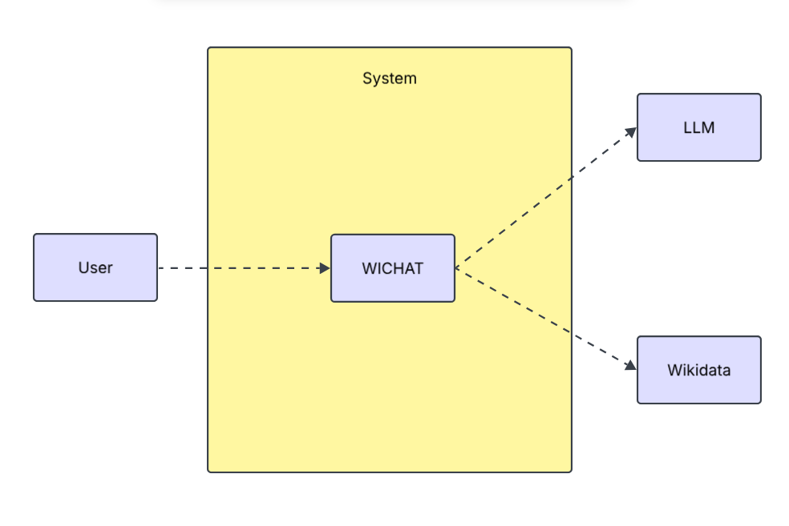
-
WIChat is a web application that allows users to register, log in, play "Saber y Ganar," and view statistics about their game performance.
-
Wikidata is a free and open knowledge base that serves as a central repository for structured data. Its API will be used to retrieve the information needed to generate questions and answers within the application.
-
Large Language Models (LLMs) are advanced AI systems designed to understand and generate human language.
3.2. Technical Context
3.2.1. System Scope
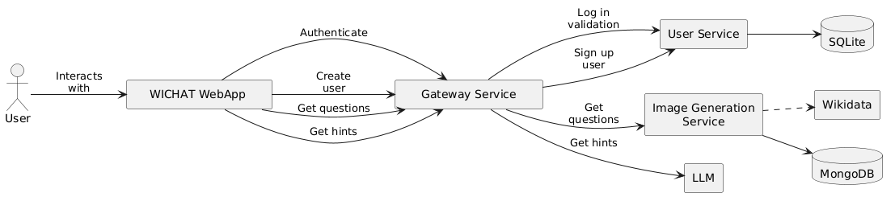
Other elements of the system are:
-
WIChat Webapp: The module responsible for user interaction through the UI, serving as the front-end of the entire system.
-
Image Generation Service: An internal service that manages image generation based on data retrieved from Wikidata.
-
Gateway Service: A public-facing Express service that acts as a proxy for user management, enabling sign-up and login.
-
User service: An Express service that handles the registration of new users in the system.
-
Auth service: An Express service dedicated to user authentication.
4. Solution Strategy
4.1. Technology decisions
To develop the app we will use the following technologies:
-
JavaScript is the main programming language.
-
ReactJS, a JavaScript library that streamlines the development of graphical interfaces for web applications, it is used to build the user interface.
-
Docker Compose to deploy all the microservices.
-
GitHub: Platform offering remote repository services for project development, task management, and version control.
-
WikiData API to obtain question and answer information.
-
ExpressJS and TypeScript to build the backend.
We chose these technologies because they were already being used in the project we based our work on. This allowed us to build upon an existing foundation, facilitating development and ensuring compatibility while leveraging JavaScript’s agility and ReactJS’s efficiency in building user interfaces.
4.2. Implementation design
4.2.1. Question generation
To generate questions, we use the questions service.
The QuestionDBService is the main orchestrator, responsible for querying wikidata and turning the API responses into questions.
Every questions belongs to a specific category. For each category, we define a class that implements the interface 'WikidataRecipe'.
This interface is used by the QuestionDBService to 1) Create a WikidataQueryBuilder, that asks for the specific entities for the category 2) Convert the API’s response into WikidataEntities, and intern the questions in the dababase 3) Generate questions from those entities.
After this process is completed, the service returns a JSON object with the following structure
[
{
"image_url" : "http://commons.wikimedia.org/wiki/Special:FilePath/Erithacus%20rubecula%20with%20cocked%20head.jpg",
"response" : "Erithacus rubecula",
"distractors" : ["Invertebrata","Bilateria","Erithacus rubecula"],
"options" : ["Invertebrata","Bilateria","Erithacus rubecula","Erithacus rubecula"],
"attrs" : {
"common_name" : "Petirrojo europeo",
"taxon_name" : "Erithacus rubecula",
...
}
},
...
]4.3. Decisions about the top-level decomposition of the system
We decided to use a microservices arquitecture, having different modules for each functionality. For example, we will use a microservice to generate the images.
4.4. Strategies to Achieve Key Quality Goals
The quality goals are explained in more detail in another section.
| Quality Goal | Strategies to Achieve It |
|---|---|
Usability |
We will conduct tests with real users to evaluate the app’s interface and improve it based on their feedback. |
Availability |
Docker Compose will be used to streamline the app deployment process and prevent issues. Additionally, web hosting will be used to make the app accessible on the internet. |
Testability |
We have created unit and end-to-end (e2e) test suites to ensure the app functions as expected. |
Performance |
We will minimize API calls to maintain quick response times, for instance, by using bulk requests when necessary. |
4.5. Key Organizational Decisions
Our framework will involve weekly work sessions with meetings scheduled as needed. One meeting will always take place during lab time to assign tasks and make minor decisions.
Additional meetings will be dedicated to more in-depth reviews and major decision-making.
Each task will be tracked as an Issue in GitHub to monitor progress. Moreover, we will use GitHub Projects to streamline the team’s workflow. To merge code into the develop branch, we will utilize Pull Requests, which require approval from all team members.
5. Building Block View
The building block view graphically represents the decomposition of the system’s most essential components.
5.1. Whitebox Overall System
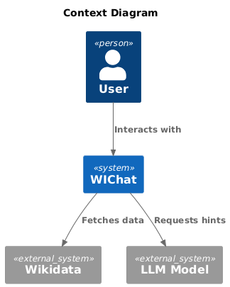
- Motivation
-
This is the main view of the system. WiChat application is related to Wikidata API, which is an external component.
- Contained Building Blocks
-
-
User: Client who interacts with the system.
-
WIChat: Main application. Represented as a blackbox that will be detailed in the following decompositions.
-
Wikidata: External API the system uses to generate questions and answers and get images from.
-
LLM Model: External Large Language Model the system uses to request hints about the image.
-
5.2. Level 2
5.2.1. White Box WIChat
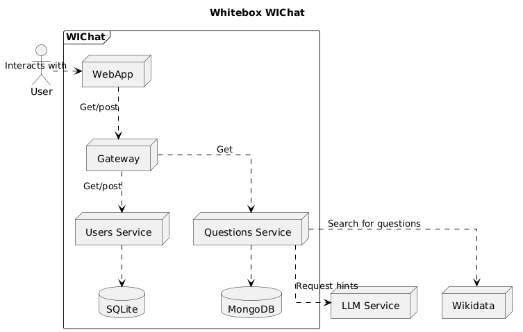
- Motivation
-
First decomposition of the system. Internal structure of WIChat component.
- Contained Building Blocks
-
-
WebApp: The main module of the application, responsible for the user interface and interaction.
-
Gateway: Handles communication between the user service and question service modules with the WebApp. It acts as a REST API.
-
Questions: Retrieves questions from Wikidata and stores them in the database.
-
Users: Manages user administration.
-
MongoDB: Database used to store the generated questions.
-
SQLite: Database used to store user information.
-
LLM Service: External service that generates hints to help users with questions.
-
Wikidata: Data source used to retrieve images and quiz questions.
-
- Other Important Interfaces
-
-
Docs: Contains the application documentation.
-
5.3. Level 3
5.3.1. White Box Users
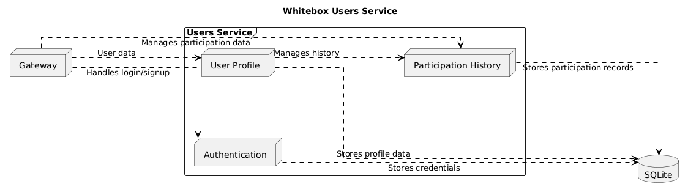
- Motivation
-
Internal structure of users service black box from level 2.
- Contained Building Blocks
-
-
User Profile: Handles user account data and profile details.
-
Authentication: Manages login and signup processes.
-
Participation history: Records and manages users’ participation data.
-
Gateway: The entry point that routes requests to the appropriate internal component.
-
SQLite: Database used to store user data.
-
5.3.2. White Box Questions
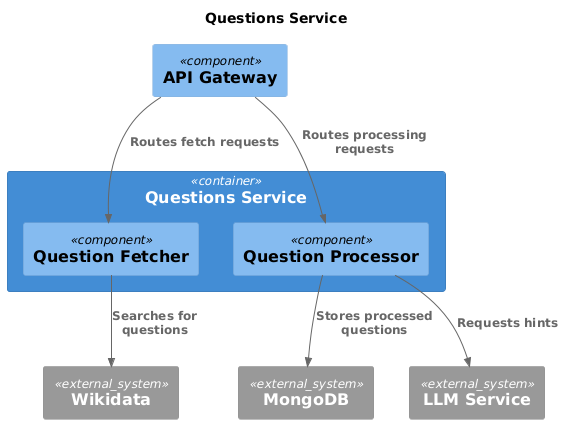
- Motivation
-
Internal structure of questions service black box from level 2.
- Contained Building Blocks
-
-
Question Fetcher: Retrieves question data from Wikidata.
-
Question Processor: Processes fetched questions and prepares them for storage. Requires hints to LLM Service.
-
Gateway: The entry point that routes incoming question-related requests to internal components.
-
MongoDB: Database used to store the generated questions.
-
LLM Service: External service that generates hints to help users with questions.
-
Wikidata: Data source used to retrieve images and quiz questions.
-
5.3.3. White Box Gateway
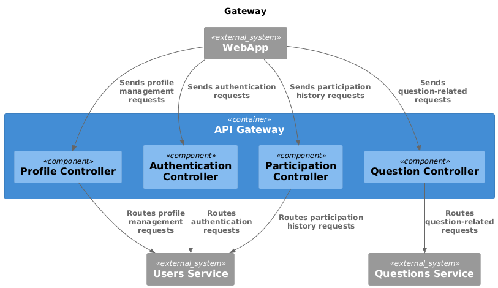
- Motivation
-
Internal structure of gateway black box from level 2.
- Contained Building Blocks
-
-
WebApp: The main module of the application, responsible for the user interface and interaction.
-
Profile Controller: Routes user profile requests to Users Service.
-
Authentication Controller: Routes authentication requests to Users Service.
-
Participacion Controller: Routes requests related to participation history to Users Service.
-
Question Controller: Routes question requests to Question Service.
-
Questions: Retrieves questions from Wikidata and stores them in the database.
-
Users: Manages user administration.
-
5.3.4. White Box WebApp
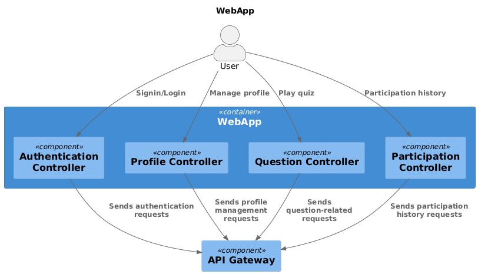
- Motivation
-
Internal structure of WebApp black box from level 2.
- Contained Building Blocks
-
-
User: Client who interacts with the system.
-
Authentication Controller: Manages login and sign in from users and sends requests to gateway.
-
Profile Controller: Manage requests related to profile and sends this requests to gateway.
-
Question Controller: Manage requests related to quiz questions and sends them to gateway.
-
Participation Controller: Manage participation history requests and sends it to gateway.
-
Gateway: The entry point that routes requests to the appropriate internal component.
-
6. Runtime View
In this Runtime View section, some sequence diagrams of different interactions with the system will be shown. Most diagrams are taken from the WIQ project, our base project, because that funcionality has not changed. You can find it in https://github.com/Arquisoft/wiq_es04a/tree/master/docs.
It has been changed MariaDB to SQLite.
6.1. Register
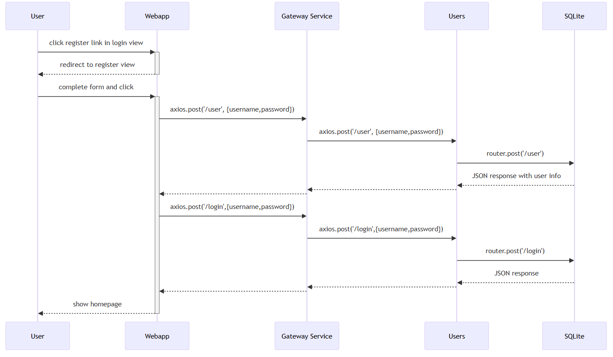
6.2. Login
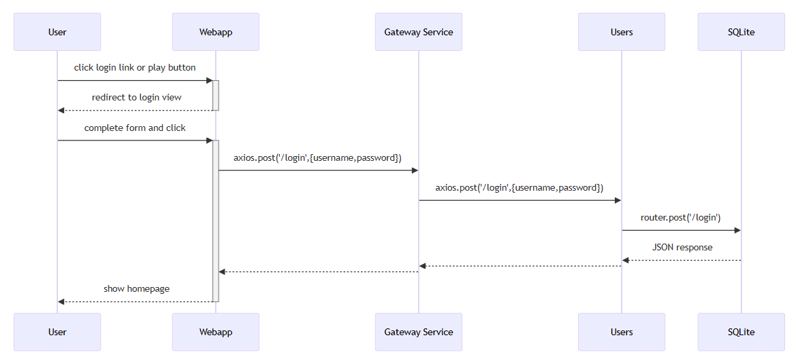
6.3. See User Statistics
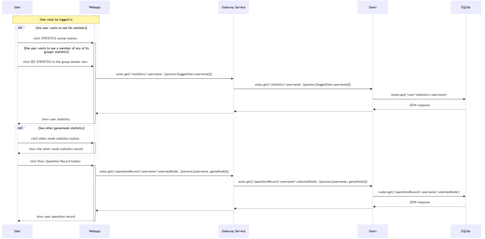
6.4. Play Games
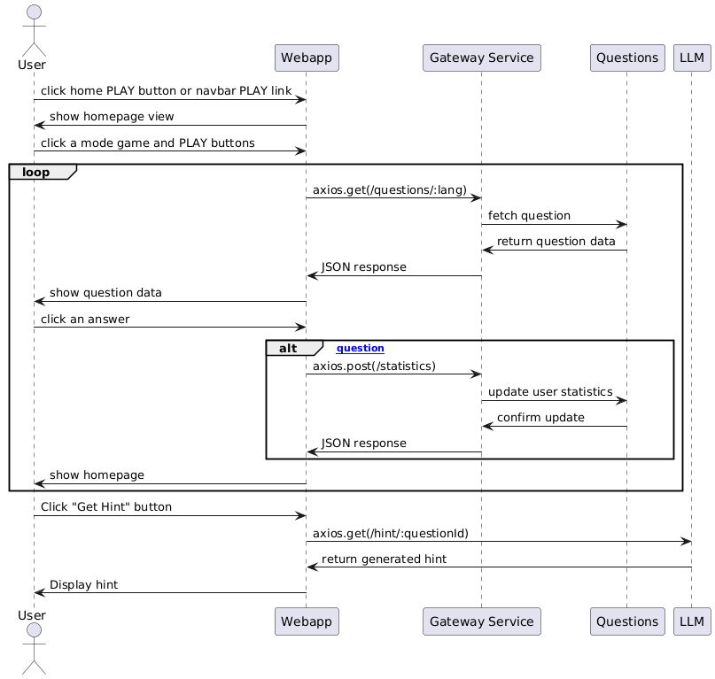
6.5. See and edit your profile
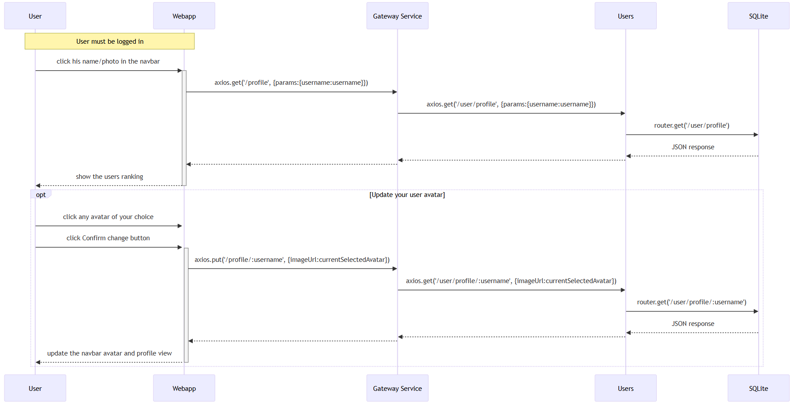
7. Deployment View
Our system is deployed using a single Azure Virtual Machine (VM), letting Docker Compose manage multiple containerized services.
These services will help us to simplify deployment, maintenance, and other features in the project.
The different containers used will be listed below:
-
WebApp: The primary user interface that interacts with the system. Retrieves data from the Gateway Service.
-
Gateway Service: Data access interface for services.
-
Users: Manages everything related to users, for example authentification.
-
LLMService: Manages LLM chat with the user to help them with the questions generated.
-
Two databases, which are:
-
MongoDB: for questions management (store the questions with the distractors and the correct answer from a specified JSON file, and do several things with that information).
-
SQLite: for users management (create various roles, e.g. User, which has many parameters, a group of users and groups, among others).
-
Questions: Generates questions to use in the game. The questions will have three wrong answers and one correct answer.

See Deployment View in the arc42 documentation.
8. Cross-cutting Concepts
Some important concepts need to be taken into account so as to a better understanding of the application. These concepts have to do with the following categories.
-
Domain concepts.
-
User Experience (UX).
-
Operation Concepts.
-
Architecture and Design Patterns.
-
Development Concepts.
Next, each category will be detailed.
8.1. Domain concepts
At the moment, the application follows this schema:
-
User: it is the person that uses the application. Multiple user sessions are an option in this application.
-
Contest: The contest is the part that the User can see. It contains everything the user can do, such as play games, look for statistics…
-
Game: The User can play the game here.
-
Question: Each question has different answers but only one of them is correct. Answering correctly to the questions rewards users with points.
-
Statistics: Each user has statistics that show different aspects of their profile, such as the time they invested on the game, correct and incorrect questions, etc.
-
Profile: User’s profile has data such as their username and the amount on points they have earned. They can also choose a profile picture from between some given avatars.
8.2. User Experience (UX)
This part is currently in progress.
8.3. Operation Concepts
-
Usability: We tried for the application to be easy to use. For this reason, we will try to spread this application to several types of persons, to complete and expand its strengths and weaknesses and improve them.
-
Usability affects User Experience as well, so it is an important aspect of the application.
8.4. Security
-
We have implemented some security in the application, which will be listed now.
-
Some blocked sites if the user is not logged in an account: This way, we avoid external people to be able to access our application as it could lead to other security issues.
-
Passwords with a minimal security level: They need to be at least 8 characters longs and they must contain upper and lower letters, numbers and special characters.
-
Encrypted passwords: In case that the batabase is stolen, data would still be secure and the passwords will contain other things, which will improve more the security of the app.
-
Passwords with salt: our passwords will have a random secuence of characters before hashing them, so they will have more security and will be more difficult to hack and obtain the passwords.
-
8.5. Architecture and Design Patterns
-
Microservice: In this application there are some microservices such as the User Management, which involves signing up, logging in and everything related to the points and timing of the user. Microservices provide an easy way of creating a complex application composed by independent systems.
-
Questions generation system: It is a microservice that creates infinite questions related to several topics, with only one type of questions: related to images. In that type of question, an image will be given for the user to guess what it is, with only one correct answer and three distractors.
-
Graphic interface: Users are able to communicate with the application to this service.
-
Generation of the hints with LLM: the app will comunicate with a LLM to provide hints of the question, trying to be accurate with the answer.
8.6. Development Concepts
-
Testing: Includes unit tests for each functionality and end-to-end (e2e) tests for core gameplay features.
-
CI/CD: The application is in continuous integration and deployment. Team members commit frequently into the repository where the project is stored. This makes it easier when assembling project parts involving collaboration from different team members.
9. Architecture Decisions
9.1. Fork a project from last year to use as a base
Since the project specification is similar to last year’s, we need to choose between building the project from scratch, or forking a project from last year.
Our decision is to base our project on last year’s wiq_es04a team.
Advantages
-
A considerable amount of functionality is the same as last year, so we won’t have to implement it.
Disadvantages
-
Using other people’s code can lead to confusion. Understanding an extraneaous codebase is complicated.
Status: Accepted
9.2. Trunk based development
Use the Trunk Based Development git branching strategy.
The proposed workflow is the following.
To make any change to the codebase:
-
Branch from master
-
Make all the changes, and commit them
-
Create a pull request to merge the changes into master
It’s important to constantly merge all the changes into master, and to avoid any aditional long-lived branches. This reduces the effort of maintaining those branches, and keeping them on sync.
Status: Accepted
9.3. Database
Last year’s project use two different databases:
-
MariaDB for users
-
MongoDB for questions
Because of a problem with MariaDB database, we all agree on still using two databases changing MariaDB to SQLite and maintaining MongoDB. Then project’s databases will be:
-
SQLite for users
-
MongoDB for questions
We think that is the easiest option for us in terms of implementation and to adapt old system functionality. SQLite is not only open source but also easy to use and efficient for small applications.
Status: Accepted
9.4. Gemini as our LLM
After discussing which LLM Api use for WIChat we had two options we liked the most: Gemini and Empathy.
Gemini Advantages
-
Better analyzing pictures and creating hints
-
Well-documented
-
Free
Gemini Disadvantages
-
Less natural conversational language
Empathy Advantages
-
Contest
-
More human-like and conversational language
Empathy Disadvantages
-
Less documentation
-
Worst hints
-
More difficult implementation
Finally, Gemini es the best option for us because of its multiple advantages.
Status: Accepted
9.5. Use Typescript
Typescript is a "type-safe" language. It offers a stricter type system than Javascript. We should use it, when possible, since it’s fairly simple to integrate in our project.
This proposal is to use typescript for new modules, guaranteeing compatibility with our existing javascript codebase. Still, new modules could be written on Javascript, depending on what the maintainers of those modules think is best. This is a tradeoff between code safety and inertia. So typescript it’s recommended, not enforced.
Advantages
-
The strict type system allows us to produce safer code, and to avoid runtime errors
-
There is a lot of tooling available to integrate typescript with a javascript application, so we should be able to transition to typescript at our own pace.
Disadvantages
-
Despite the tooling available, typescript is a different language, and integrating it with our javascript code won’t be trivial. But we think it will be worth the effort.
-
Typescript’s safety ends on typescript domain. If we use a typescript module from a javascript program, all the mentioned type-safety will be gone. It’s not a magical solution, just a nice thing that could improve the quality of the code.
Status: Accepted
10. Quality Requirements
The main quality goals are:
-
Usability: The interface should be intuitive, with clear instructions and an accessible design. This will allow users of all abilities to navigate and use the application effortlessly. It must mantain usability in mobile devices.
-
Availability: The system should aim for maximum availability, ensuring it is accessible at all times.
-
Testability: The code must be tested and should be easy to test. The tests improve the stability of the codebase by detecting regressions.
-
Performance: Efficiency is a priority in system usage, particularly in quick question generation, ensuring a good experience for users.
10.1. Quality Tree
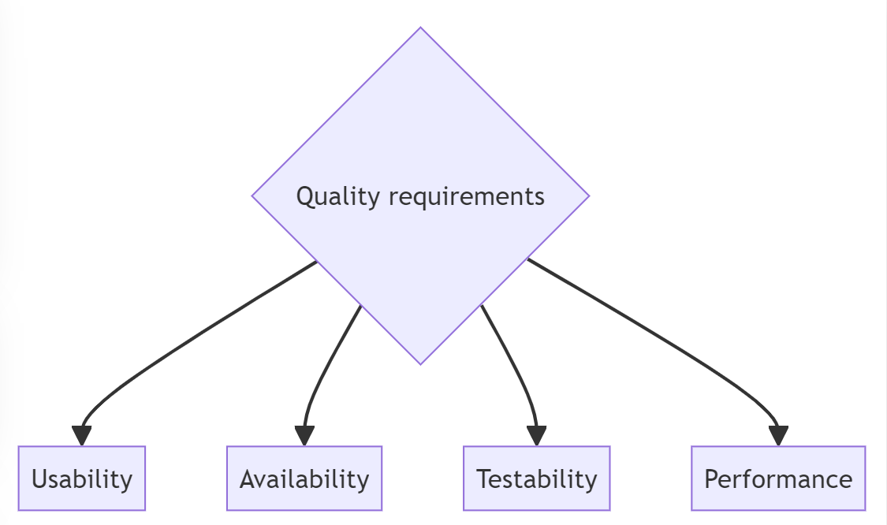
10.2. Quality Scenarios
Usage Scenario table:
| Usage Scenario | System Reaction |
|---|---|
The user initiates the web application, enters their username and password, and clicks the login button. |
The system verifies the information entered by the user, and if correct, redirects them to the main page; otherwise, it indicates an error has occurred. |
The user surveys the main window, where several buttons with different options appear. |
In response to pressing each of these buttons, the system will display the corresponding content. |
The user starts the game and is awaiting the questions. |
The system swiftly generates the question and its possible answers. |
The user loses the game and decides to stop playing for a while. Five hours later, they decide to play again. |
The system remains active and functions correctly. |
The user decides to chat with the LLM |
The chat window opens, and an interactive chatbot is started |
Change Scenario table:
| Change Scenario | System Reaction |
|---|---|
Adding an additional login system to access the account not only through username but also through the email. |
The system should be capable of adapting to provide this functionality without affecting the existing ones. The tests verify that the old login is not affected. |
Adding a new game mode or functionality. |
When adding a new feature, the application’s usage methodology should not be distorted, ensuring it can still be used in the same manner. |
Changing the LLM backend |
The LLM service should be flexible enough to support multiple LLM’s in the future |
Performance Scenario table:
| Performance Scenario | System Reaction |
|---|---|
The user starts a game |
The questions should be generated fast, and the user shouldn’t have to wait more than a second or two for the game to start. |
The user starts a chat with the LLM, to ask questions. |
The chat should work smoothly. |
Testing Scenario table:
| Testing Scenario | System Reaction |
|---|---|
A change is added to the codebase |
The change should be tested meticulously |
A change on the codebase breaks functionality |
The existing test suite should fail and reveal the regression |
The system starts a test for the LLM service |
The tests should run deterministically. Chats are simulated, so no LLM randomness affects the test. Tests for the LLM service should be deterministic. |
11. Risks and Technical Debts
A comprehensive list of identified technical risks and technical debts, prioritized based on their potential impact.
A structured list of risks and technical debts, accompanied by proposed mitigation strategies to minimize or prevent negative impacts.
See Risks and Technical Debt in the arc42 documentation.
11.1. Risks
To evaluate the significance of the identified risks, we use a scale from 1 to 3, where 1 denotes low relevance, 2 medium relevance, and 3 high relevance.
| Risk | Relevance | Considerations |
|---|---|---|
Limited expertise in specific tools or programming languages |
2 |
The team may encounter difficulties due to varying levels of familiarity with required tools and languages. To address this, we will prioritize the use of well-known technologies within the team while encouraging knowledge-sharing and individual learning efforts. |
Lack of prior collaboration within the team |
1 |
Since the team has not worked together before, there is a risk of inefficiencies in coordination. Establishing clear communication channels and regularly updating each other on progress will mitigate this issue. |
Large team size |
1 |
A higher number of contributors can complicate communication and workflow synchronization. Implementing structured meetings and documentation processes should help maintain efficiency. |
Potential delays in integrating external APIs |
2 |
Depending on external data sources, such as Wikidata, might introduce latency or downtime risks. Developing fallback mechanisms and caching strategies can help mitigate disruptions. |
Knowledge disparity among team members |
2 |
Some team members have prior experience, either from retaking the course or external knowledge, while others are learning these concepts for the first time. This can lead to uneven task distribution and communication gaps. Encouraging mentoring and pairing experienced members with those less familiar can help balance the workload and improve overall team efficiency. |
11.2. Technical Debts
| Technical Debt | Considerations |
|---|---|
Code maintainability and quality |
Adopting new languages and frameworks can lead to inconsistencies in coding standards. To prevent this, we will enforce code reviews through pull requests, ensuring peer validation and adherence to best practices. |
Documentation gaps |
The absence of comprehensive documentation makes onboarding new developers and maintaining the system more difficult. Creating and maintaining updated technical documentation will help streamline development and troubleshooting processes. We need to update our documentation, since it doesn’t reflect the current architecture. |
Code cleanup and adaptation from last year’s project |
The project inherits code from last year’s implementation, which may not meet current requirements or best practices. To address this, we will dedicate time to learning how to properly transfer and adapt the previous project to align with the updated requirements. This includes improving code quality, removing redundant code, and ensuring compatibility with the new project scope. |
Departure of a team member |
The departure of a team member in the middle of the project creates a gap in the team’s capacity and can lead to reorganization of work and issues. This also impacts knowledge continuity, requiring time for other members to onboard and understand the previous work. To mitigate this, we will equally redistribute tasks and maintain a good team atmosphere. |
By systematically addressing these risks and technical debts, we aim to enhance project stability, maintainability, and long-term viability.
12. Glossary
In this section, we will define and translate some key concepts we consider essential to understand our application.
The format is simple: a table with the term and its definition.
For more information, check the arc42 documentation: Glossary.
12.1. Acronyms
| Acronym | Term | Definition |
|---|---|---|
ADR |
Architectural Design Record |
A document where an important decision about the software architecture is recorded. It describes what was decided, the decision’s context, and its consequences. Its purpose is to ensure that the design meets functional, aesthetic, and security requirements before proceeding with development. |
API |
Application Programming Interface |
A set of rules and tools that allow different applications to communicate with each other. It defines methods and data formats developers can use to exchange information between various systems. |
CI/CD |
Continuous Integration & Continuous Delivery |
Development practices that automate code integration and delivery. CI focuses on frequently integrating code changes, while CD automates testing and deployments. Continuous Delivery requires manual approval before moving to production, while Continuous Deployment does this automatically. |
LLM |
Large Language Model |
A type of AI model that processes natural language to generate human-like text, answer questions, and more. Used in applications for enhanced text comprehension and generation. |
WICHAT |
The name of the web application where users can register and log in to play different types of rounds. |
12.2. Domain Terms
| Term | Definition |
|---|---|
ChattySw |
Fictional company name we simulate being hired by to develop the application. |
Know & Win |
Spanish television program that mixes quiz contests with learning. It is broadcast on La 2 of Televisión Española and features challenges in general culture, history, science, art, etc. |
Player |
A user who registers in the application to play the various available quizzes. |
Picture Game |
A challenge with questions from various topics (animals, logos, flags). The goal is to answer as many questions correctly as possible within a limited time, the round ends after 5 questions. |
12.3. Technical Terms
| Term | Definition |
|---|---|
arc42 |
A set of recommendations for documenting and designing software architectures. It provides a structured template to better communicate the system’s technical aspects. |
Backend |
The part of the software that runs on the server and is not visible to users. It handles data processing, database storage, and business logic. |
Container |
A lightweight and portable unit that includes everything needed to run an application (code, dependencies, libraries, etc.), ensuring it works the same in any environment. |
Frontend |
The part of the software that directly interacts with the user. It includes the graphical interface and the user experience in the browser or an application. |
Git |
A free and open-source version control system that allows managing code changes and collaborating with other developers. |
Wikidata |
An open and free database that stores structured information from Wikimedia projects and others. It allows sharing and querying data about people, places, events, concepts, etc. |
13. Appendix I: Load Tests
This section outlines the load testing performed to evaluate the system’s performance and stability under simulated user demand. Using Gatling, we conducted tests to measure how the system handles concurrent users.
We recorded the specific functionalities to be tested and configured Gatling to simulate user interactions. Our initial test involved gradually increasing the number of concurrent requests to 1,000 over a 2-minute ramp-up period, mimicking a realistic usage scenario. The configuration details for this test are summarized below:
Configuration for Gatling Recording 1 - Ramp-up period: 2 minutes - Target users: 1,000 - Test duration: 6 minutes (22:59 to 23:05)
After executing the load test, we analyzed the results. Approximately 33% of requests failed. The majority of successful requests (around 40%) had response times between 800 and 1,200 ms, while 35% were under 800 ms, as shown in the response time distribution. While response times were acceptable, reducing the failure rate is a priority to ensure a seamless user experience.
The following graphs illustrate the test results, showing request failures, response times, and active users over the simulation period.
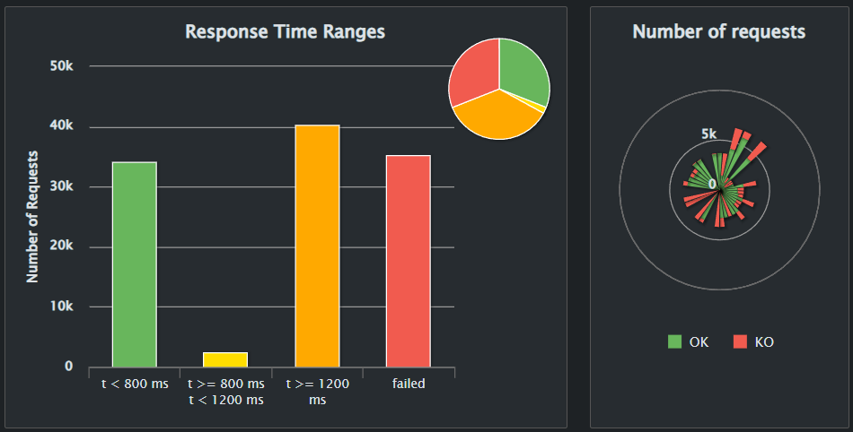 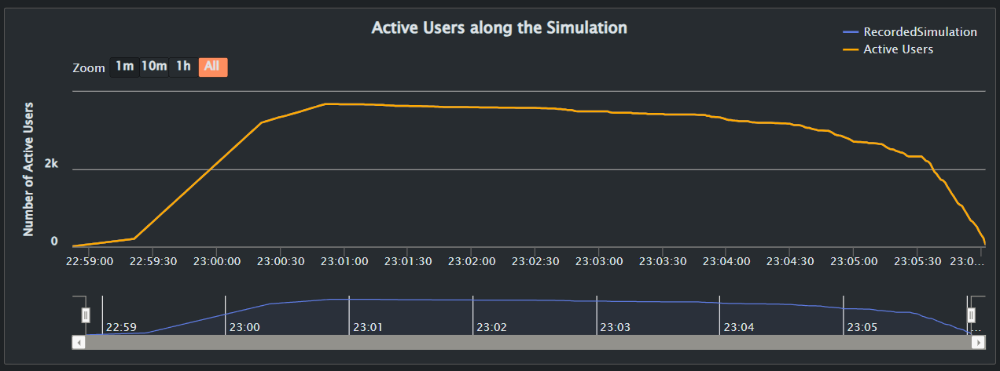 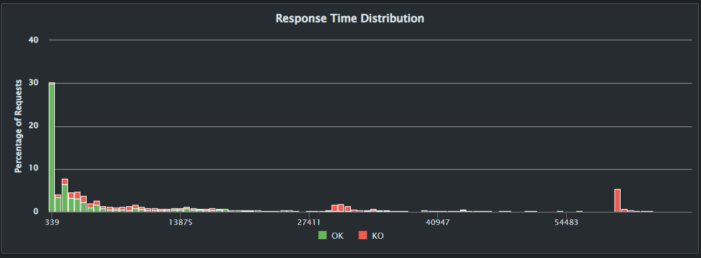 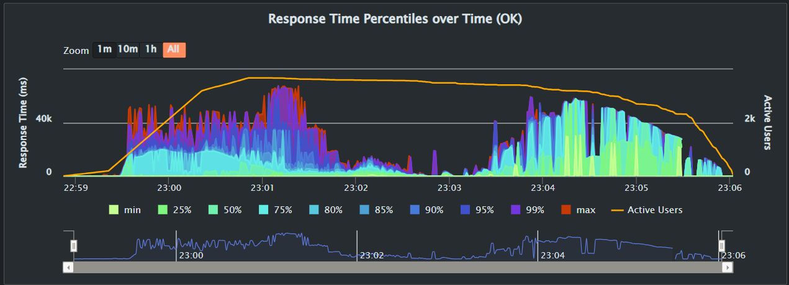 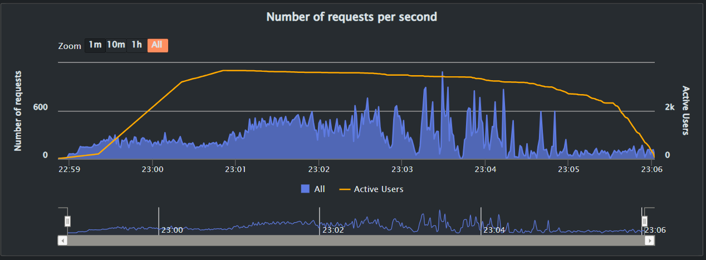 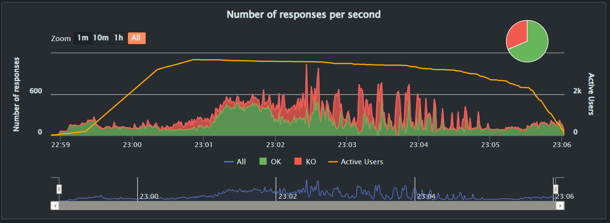
14. Appendix II: Other Tests
14.1. Unit Tests
Throughout the development of the application, we consistently implemented unit tests. These tests were key to verifying that newly added features worked correctly. They also made it easier to catch unintended changes — if something was modified, we would adjust the unit tests accordingly. This helped us spot unexpected impacts on other parts of the application and identify unwanted dependencies between components. For these reasons, maintaining a high level of test coverage was a priority. We successfully achieved over 80% code coverage across the project.
14.1.1. SonarCloud
The image below provides an overview of our repository as analyzed by SonarCloud. As shown, all services have reached at least 80% coverage, with some nearing 90%. Overall, the project maintains an average coverage of about 82%. However, it’s important to note that good testing is not just about high numbers, but about meaningful, effective coverage.
Additionally, SonarCloud offers a graphic showing risk levels across different parts of the codebase. Bubbles located in the top-right area of the graph indicate potential long-term risks, while green bubbles in the bottom-left represent healthy code. In our case, the graphic shows all green bubbles, with most positioned in the safest zone at the bottom-left.
14.2. Usability Tests
To evaluate how intuitive and accessible our application is for end users, we conducted a series of usability tests involving five participants: three with prior experience using similar applications, and two with no prior experience.
Each user was asked to perform the following tasks:
-
Register an account
-
Access the game mode
-
Complete a game session
All participants successfully completed all tasks without external help.
Results Summary:
Experienced users:
-
Average task completion time: 1:39 minutes
-
Reported being satisfied with the interface and flow
Inexperienced users:
-
Average task completion time: 2:47 minutes
-
Also reported satisfaction and found the application easy to learn
These results suggest that the application provides a user-friendly experience for both novice and experienced users, with no significant usability barriers.
15. Appendix III: Application monitoring
Monitoring an application is a crucial part of it. It is an easy way of knowing how well a web application is working through different graphics and metrics. For this, we adapted the monitoring system that was given to us and we personalized it. That means we are using Prometheus as well as Grafana to monitorize our project. Prometheus intercepts every request that reaches our application’s gateway. Grafana takes those data at paints them in easy-understanding graphics. We have a dashboard in Grafana to display some aspects that we consider relevant.
The dashboard that we are using to monitorize our project is called wichat_es1a Dashboard and it has 3 different panels. The first of them shows the number of requests through time. The second one shows requests that succeed. The third one paints a graphic of the average time each request takes.
To see how Grafana works we have used Apache. We have stablished the number of requests and how fast we want them to execute. This lets us check easily how our project treats requests. Also, another interesting thing to mention are the metrics . It shows every different request on the application and its status code.